Tupu-ā-rangi
Ko te whetū tuawhā ko Tupu-ā-rangi, he hononga ki ngā kai mai i te rangi (hei tauira, ngā manu, ngā hua me ngā rākau). Titiro ki tēnei whetū hei whiwhi whakaaro whakamanawa mō ō rātou whāinga e rima ake i te rā.
The fouth star is Tupu-ā-rangi, which is associated with food from the sky (eg. birds, or elevated foods such as berries and fruit from trees). Look upon this star to find inspiration for your five plus a day.